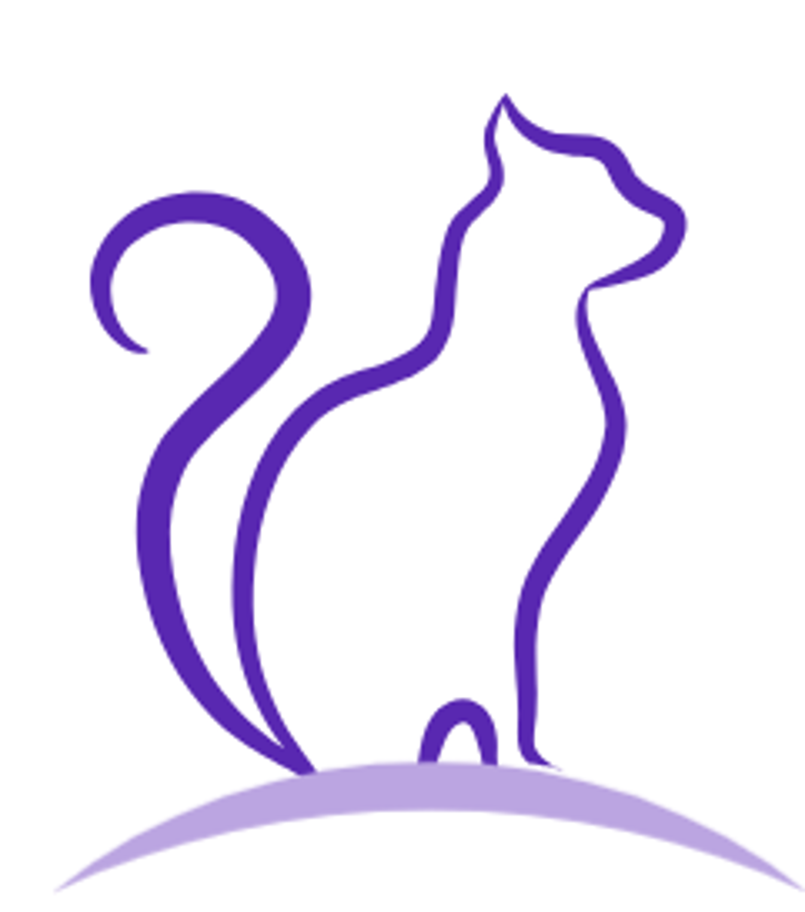

1411243015 陳昱蓁
個人介紹
國立台中科技大學 應用中文系三年級
個人企劃

寵進你心
LOGO設計理念：以簡潔線條所勾勒出的貓咪作為遊戲LOGO，而主色調為紫色，搭配上貓咪的圖案，營造出溫馨且高雅的氛圍。
遊戲名稱設計理念：「寵進你心」代表著溫暖陪伴和心靈治癒，喚起玩家對寵物與情感的渴望。
貳、發想
動機來自於之前玩過的遊戲candy crush，並結合寵物元素，使遊戲具益智效果，並帶有溫馨感。
參、遊戲類型
益智遊戲
遊戲目的：讓玩家感覺溫馨，並可以在益智遊戲中放鬆心情。
遊戲風格：手機遊戲、卡通
肆、故事大綱
小J渴望飼養寵物，而卻慘遭反對，並勒令禁養。
小J只能上網看著別人家的寵物，黯然神傷。
突然，某天被系統綁定，只需在指定時間內，完成所有任務，即可得到一隻寵物。
伍、遊戲流程：
一、操作方式
二、劇情
在養寵物盛行的時代，小J卻因為過敏的原因而無法與動物互動，但是小J最大的願望就是可以體驗寵物的樂趣，與牠一同玩耍。
直到某天小J的耳邊響起一道電子音：系統5211已綁定，請按照要求，在時間內每完成一個任務，任務獎勵一隻寵物。
三、結局劇情
四、玩法介紹
五、流程圖
開啟遊戲➡️前置劇情➡️關卡解說➡️完成所有任務➡️遊戲結束